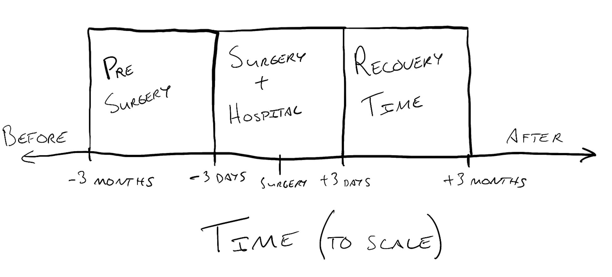
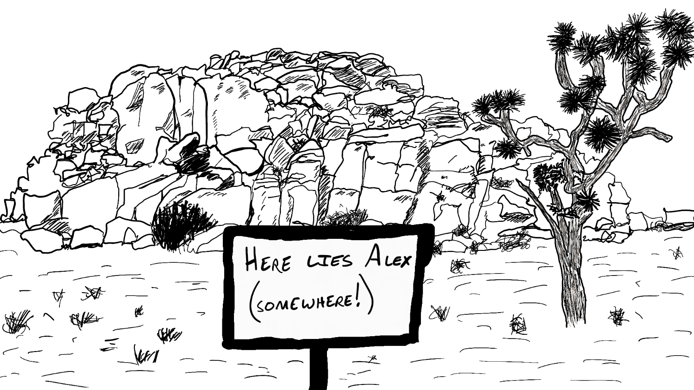
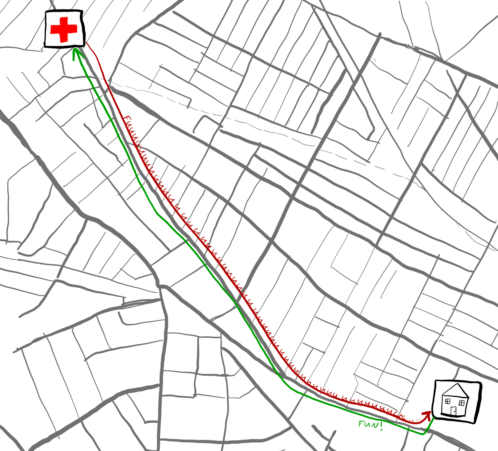

Timeline and Early Days
Nov 16, 2025 · 1423 words · 7 minutes read
Timeline and discovery: the early days
The simple timeline of my journey sounds deceptively easy at first:
- I found out about the issue after an echocardiogram on January 23rd, 2025.
- I had open heart surgery on Tuesday, June 24th
- I was sent home from the hospital three days later on Friday, June 27th
- I hit the 12-week mark on Tuesday, September 16th
- It’s now Sunday, November 16th
Just a quick ten months in which I had to process, learn, understand, talk to experts, learn some more, imagine worst case scenarios, cope, walk, constantly be aware of my heart, try not to think about it, try to carry on, get more scans, get second, third, and even fourth opinions, become an expert at navigating these medical appointments, make difficult decisions, make the call and pick a date, get a list of all of the financial accounts and their passwords just in case, get covid, get better, invite family to town, take medical leave, show up at the hospital, put one foot in front of the other, take a quick nap, wake up, spend three grueling days at the hospital, make it home, start recovery, build up my walking again, not pick anything more than ten pounds up for three months, get better, starting picking things up again, start jogging again, and return closer and closer to a normal life.
Not bad!
Naturally, the full timeline is much more complex. Looking back, there has definitely been some time dilation going on here in my memory, between the rawness and the flurry of activity pre-surgery, the overwhelming intensity of the 3-5 days of the surgery and hospital stay, and the floating repetitiveness of my recovery months. Really, it’s as if the last ten months are separated into three even chunks of time in my memory, which above all else really underlines just how intense the few days around the surgery really were:

But for now, let’s return to the start.
The longer story really starts much earlier. My family has a complex medical history, particularly around cardiac health, with issues on either side. Most immediately relevant to my own experience is my father’s history, where he had to have a mitral valve repair, then a repair of a repair. He ended up passing away from a presumed cardiac incident a little over two years ago.
With that in mind, my siblings and I all share these genes, and all of us got echocardiograms, where a technician measures the various sizes, diameters, blood flows, and efficiencies of your heart, valves, and vessels. Having one done when you’re younger can provide a good baseline to compare against as you get older, allowing you to measure things like changes in sizes or valve efficiency over time.
That was the mindset I had when I scheduled an echocardiogram in January; let’s measure so we can have the data points to compare against if health issues start to show up in my 50s or 60s. Calm as a cucumber, I went in for the echo, and, knowing the smallest bit of heart anatomy from a random heart physics class I took in college, I even joked with the tech about one of my valves having three leaflets, just as it should. I had an appointment with my cardiologist immediately after the echo, and I was expecting a short and sweet “all’s well, see you later” that I had come to expect from most of my visits.
In retrospect, the first sign that something wasn’t right might have been that they came in and let me know they decided they wanted to get an EKG as well. I remember it was a chilly 20 degree day that I had gotten bundled up for to walk to my appointment, and I had to roll back my perfectly tucked socks and wool long underwear so they could put a lead on my leg. The tech even apologized for disrupting my perfect layering. It’s funny what little things stick out in your memory.
When the cardiologist came in and shared the results of my echo, the main things I remember clearly are the words " aortic aneurysm", “likely need surgery to fix”, and “refer you to a cardiac surgeon”.
…!
If you’ve ever been shocked with bad news, you probably know the sensation of immediately being completely overwhelmed. It was almost as if everything else shut down while my brain worked to re-process those words, each of which I knew, but also knew they didn’t apply to me. Surely it wasn’t little old me at 32 and relatively good health — this was not how these appointments were supposed to go.
If you’d like to see what it roughly felt like, I have an easy four step process to try it out:
- First, turn on an annoyingly high pitched noise to set the mood (tinnitus-enjoyers can skip this step)
- Second, plug your ears so the only thing you can hear is your breathing and the beating of your own heart
- Third, close your eyes, because you couldn’t
- Finally, repeat in a whisper to yourself: “you need heart surgery, you might die, and your life will never be the same”
Fun!
I motioned from my neck down my sternum and asked if it would be heart surgery heart surgery, and my cardiologist said it would be up to the surgeon, but likely yes. They mentioned a follow-up CT scan to get even better images and measurements, and they recommended stopping any strenuous physical exercise, as spikes in blood pressure can worsen the aneurysm and lead to tears, which would be very, very bad.
Physical exercise could be bad, you say? Funny you should say that, because three weeks before, I had been doing very strenuous physical exercise in Joshua Tree, rock climbing and scrambling with no cellphone service, even occasionally going out on solo morning scrambles deep in the park on random, infrequently visited areas. There easily could have been a parallel timeline where something happened during one of those scrambles, and that would have been it for me.

I walked home from that appointment in an absolute daze. I remember that my main thought was how I was going to break this news to my wife. We had been joking and silly before I left, and coming back with this kind of news was guaranteed to cloud the rest of the day. There was a fleeting impulse to not tell her at all — let’s just keep this terrible news to myself and not ruin anyone else’s sunny January day. I floated past the rest of the 25 minute walk, with each foot bringing me a little closer to the difficult thing I’d inevitably have to soon do.
On the way back, I experienced this odd sensation of forcing myself to put one foot in front of another, making myself move forward even though I was scared, uncertain, and not looking forward to it. I knew what I would have to do — return to my apartment and share the news with my wife — and I just had to go through the motion as best I could. This would end up being a recurring theme throughout my entire journey; knowing what I have to do, I just have to go step by step.

Naturally, I did tell my wife, and naturally, it did fuck up her day too.
Once you know something like that, you can’t go unlearn it. The pre-aneurysm times were over, even though we didn’t even know at the time how lucky we were to be in the pre-aneurysm times. Life was immediately divided into a “before” and “now”, with the new chapter starting with a bang. Funny enough, it was only the new knowledge that was causing this split. It was likely that nothing had physically changed from the day before, but now we knew about it, this new cursed fact infecting every part of our thoughts.
Along with the knowledge, there were so many questions. What did this actually mean? Would I really need surgery? What if it isn’t really a problem and we can just wait it out? Why did this happen to me? What happens next? As you can tell, the story goes well, but at the time, we were very far from knowing it would.
This is how the story began.